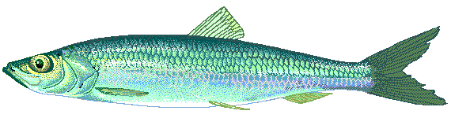

PRZEPISY KULINARNE - RYBY SĄ SUPER
Mogłabym jeść ryby codziennie ,a śledzie nawet dwa razy dziennie, kocham rybną kuchnie za wiele rzeczy.
Kuchnia rybna jest prosta. przegotowanie dania na bazie ryby nie wymaga tyle czasu, ile ugotowanie czy upieczenie mięsa.
Dobra świeża ryba potrzebuje minimum dodatków, więc nie trzeba robić specjalnych zakupów, żeby raczyć się pysznym daniem, ale jeśli chcemy możemy z rybami zaszaleć!!!
Tak wdzięcznym produktem że pasują do nich całe mnóstwo dodatków- od tradycyjnych
po egzotyczne. no i są zdrowe-każdy specjalista od żywienia to potwierdza, każdy lekarz radzi,
by włączyć ryby do codziennej diety. jak dla mnie, nie ma przyjemniejszego zalecenia-jeść
to, co jest takie pyszne i czuć się fantastycznie!!!!!
